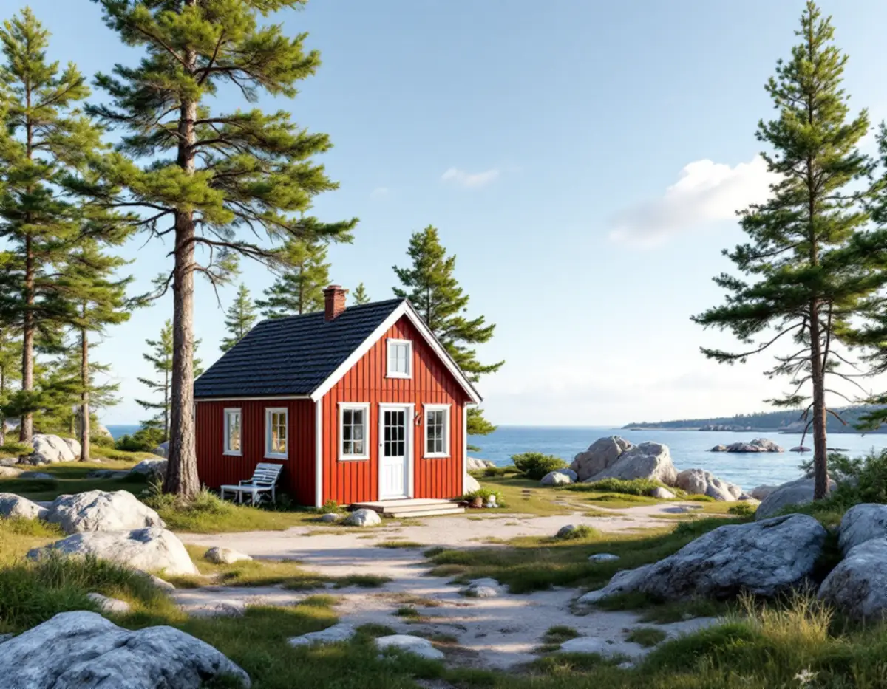
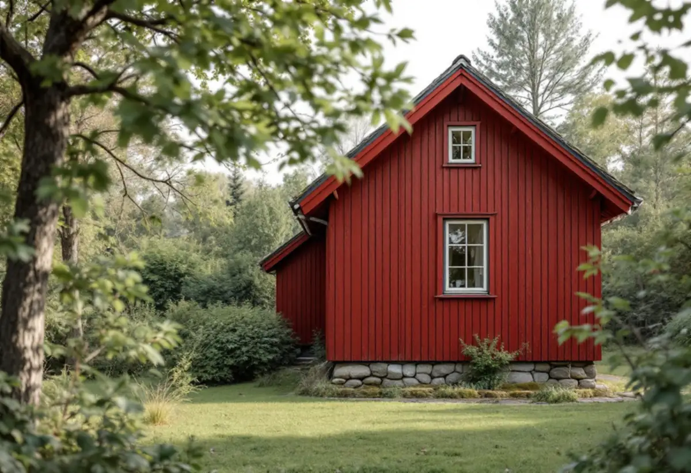

Plan och karta
Detaljplan, kulturmiljökarta och strandskydd kontrolleras för fastigheten.
Värmdö har enligt kommunens översiktsplan från 2003 inte byggts ut med villor och egnahem i någon större utsträckning, utan med ett stort antal fritidshus. När ett sådant hus ska bli större är det ofta detaljplanens små byggrätter som sätter gränsen. Geal Entreprenad AB bygger till småhus som total entreprenad, och här går vi igenom hur byggrätt, lovfria tillbyggnader och avvikelser hänger ihop.

Översiktsplanen från 2003 beskriver att många av kommunens planlagda fritidshusområden har en byggrätt på 60 kvadratmeter för huvudbyggnad och 40 för komplementbyggnad. När plan- och bygglagen infördes 1987 ändrades byggrätten till 60 + 40 i ett 70-tal detaljplaner med sammanlagt omkring 5 000 fastigheter. Den som var mantalsskriven på sin fastighet i slutet av 1986 fick en övergångsbestämmelse med fortsatt byggrätt på 150 kvadratmeter för huvudbyggnaden.
Planen konstaterar också att bygglov i vissa områden har beviljats i strid med detaljplanen under flera år och att enskilda fastighetsägare har fått planändringar för sin fastighet. Stora skillnader i byggrätt kan därför förekomma inom samma fritidshusområde. I andra förändringsområden saknas detaljplan, och där prövas i varje enskilt fall hur stor del av fastigheten som får bebyggas.
Grannhusets storlek säger alltså lite om vad som gäller på din tomt. Översiktsplanen är från 2003, så vi utgår från den detaljplan som gäller för fastigheten i dag och räknar på huset som det står.

Sedan den 1 december 2025 får ett småhus byggas till utan bygglov med sammanlagt högst 30,0 kvadratmeter, om tillbyggnaden inte går över husets taknock och ligger minst 4,5 meter från gränsen eller har grannens skriftliga medgivande. Enligt Boverket får en sådan tillbyggnad strida mot detaljplanen. För ett hus som redan har fyllt planens byggrätt kan det vara vägen till mer yta utan bygglov.
Värmdö kommun påpekar att det som redan byggts lovfritt, till exempel skärmtak och attefallsåtgärder, räknas in i den nya potten. Kommunen skriver också att det fortsatt inte är tillåtet att utan tillstånd bygga närmare än 4,5 meter från tomtgränsen eller inom 100 meter från strand. Inom kulturhistoriskt värdefulla områden och riksintressen för kulturmiljövården krävs bygglov, och det visar kommunens kulturmiljökarta.
Ska tillbyggnaden få vatten, avlopp, ventilation eller en eldstad krävs en anmälan till byggnadsnämnden, även om själva tillbyggnaden är lovfri. Strandskyddet beskriver vi närmare under byggföretag på Värmdö.
Behövs mer än de lovfria kvadratmetrarna prövas bygglovet mot detaljplanen, och en avvikelse kan godtas om den är liten och förenlig med planens syfte. Boverket sammanfattar Mark- och miljööverdomstolens praxis: ett överskridande med en viss procent är inte i sig en liten avvikelse. Omgivningens skala och karaktär spelar in, liksom om avvikelsen behövs för en bättre planlösning eller av byggnadstekniska skäl.
Ett av fallen gällde ett område med både permanent- och fritidsbostäder, där huvudbyggnaden fick vara högst 80 kvadratmeter. Efter tillbyggnaden skulle den bli 88, och domstolen fann att avvikelsen på 10 procent inte var liten. I ett annat fall överskred en tillbyggnad av ett enbostadshus planens 175,9 kvadratmeter med 10 kvadratmeter, ungefär 5,7 procent, och lov kunde ges. Ett nytt fritidshus på 117,5 kvadratmeter där planen tillät 100 bedömdes inte som en liten avvikelse.
Därför räknar vi på flera varianter: hur mycket som kan byggas lovfritt, vad som ryms inom planen och om en avvikelse har tydliga skäl.
Översiktsplanen beskriver hur vattenuttaget och belastningen på avloppsanläggningar ökar när allt fler bor permanent i fritidshusen. Värmdö kommun skriver att en helt ny avloppsanläggning och att ansluta ytterligare en byggnad till en befintlig kräver tillstånd, och att ändringar av en befintlig anläggning ska anmälas. Kommunen räknar med omkring två till tre månader från att handläggningen börjat innan gräv- och anläggningsarbetet kan starta.
Får tillbyggnaden ett badrum eller ett kök är det klokt att reda ut avloppsfrågan innan bygget planeras i detalj. Mer om brunn och avlopp finns under badrumsrenovering på Värmdö.
Detaljplan, kulturmiljökarta och strandskydd kontrolleras för fastigheten.
Huset mäts upp och vi ser var tillbyggnaden kan stå på tomten.
Vi räknar på lovfritt, planenligt och eventuell avvikelse.
Vi stämmer av om installationerna kräver anmälan eller tillstånd.
Arbete, material och handlingar redovisas var för sig.
Grund, stomme och tak anpassas till berg och väder i skärgårdsläget.
Rotavdraget är 30 procent av arbetskostnaden, högst 50 000 kronor per person och år och högst 75 000 kronor tillsammans med rutavdrag. Material och resor ger inget avdrag.
För att en tillbyggnad ska ge avdrag ska någon av dess sidor sitta ihop med husets yttervägg till minst 75 procent, eller så ska det finnas en dörr mellan tillbyggnaden och huset. Skatteverket kräver också att större delen av den ursprungliga stommen behålls. Ett nytt fristående gästhus ger inget avdrag. Vi drar avdraget direkt på fakturan.
Berg och grundläggning, transporter till tomten, om huset behöver anpassas för helårsboende och om avloppet måste göras om påverkar mest. Efter ett gratis platsbesök får du ett skriftligt kostnadsförslag.
Mer boyta i samma hus.
Tillbyggnad →Takbyte, takbesiktning och plåtarbeten.
Takläggare på Värmdö →Skärgård, vind och fritidshus.
Takrenovering på Värmdö →Fritidsområden, kulturmiljö och avlopp.
Attefallshus på Värmdö →Brunnsvatten, salt och eget avlopp.
Badrumsrenovering på Värmdö →Byggrätt, PFO-områden och strandskydd.
Byggföretag på Värmdö →Röd panel, vita snickerier och båthus i skärgårdsbyarna.
Fasadmålning på Värmdö →Sommarvillor, skyddade hus och helårsboende.
Fasadrenovering på Värmdö →Gustavsbergs bevarandevärda fönster.
Fönsterbyte på Värmdö →Glasverandor och äldre fönster.
Fönsterrenovering på Värmdö →Fritidshus som blir permanentbostäder.
Golvläggare på Värmdö →Gamla brädgolv och skonsam slipning.
Golvslipning på Värmdö →Fritidshus, eget avlopp och Gustavsberg.
Köksrenovering på Värmdö →Plåttak och beslag på Värmdö.
Plåtslagare på Värmdö →Fritidshus som blir helårshus.
Snickare på Värmdö →Anmälan, kulturmiljö och tak i skärgårdsbyarna.
Takbyte på Värmdö →Riva eller spara tapetlagren.
Tapetsering på Värmdö →Skärgårdshus, fritidshus och bruksmiljö på Värmdö.
Målare på Värmdö →VVS, varmvattnet och byggreglerna.
Totalrenovering på Värmdö →